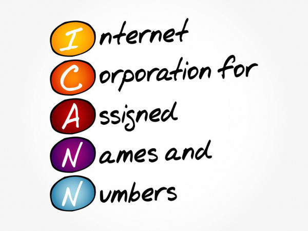

To reach another person on the Internet you have to type an address into your computer -- a name or a number. That address must be unique so computers know where to find each other. ICANN coordinates these unique identifiers across the world. Without that coordination, we wouldn't have one global internet.
The Internet Corporation for Assigned Names and Numbers (ICANN) helps coordinate the Internet Assigned Numbers Authority (IANA) functions. The IANA functions are critical to the continued operations of the Internet's underlying address book, the Domain Name System (DNS). They include the assignment of technical protocol parameters and the administration of certain responsibilities associated with Internet DNS root zone management.
Members of sub-groups in ICANN can raise issues at the grassroots level, rather than the Board of Directors solely declaring what topics ICANN will address. Then, if an issue is worth addressing and falls within ICANN's remit, it can rise through various Advisory Committees and Supporting Organizations until eventually policy recommendations are passed to the Board for a vote.
ICANN provides an arena where all advocates can discuss Internet policy issues. Almost anyone can join most of ICANN's volunteer Working Groups, assuring broad representation. Process resists capture by any single interest– an important consideration when managing a resource as vital as the global Internet.
ICANN's belief is that all users of the Internet deserve a say in how it is run. In the ICANN community, you'll find registries, ISPs, intellectual property advocates, commercial and business interests, non-commercial and non-profit interests, and individual Internet users.

The Policy Development Support Team (PDT) supports the ICANN community's development of bottom-up, consensus policies and guidelines that help advance the stable and secure operation of the Internet's unique identifier systems. The Policy Staff facilitates the community's formation of policies that are. Developed through a highly participative, fair, and balanced process in a timely and efficient way.
Reconsideration Request - A request for reconsideration or review of an ICANN action or inaction to the extent that the person or entity has been adversely affected by it. This includes any staff actions or inactions that contradict established ICANN policy(ies) or are taken as a result of the Board's reliance on false or inaccurate material information.
All Reconsideration Requests must be submitted within 15 days after the date on which information about the challenged Board action is first published in a resolution, unless the posting of the resolution is not accompanied by a rationale. All requests challenging either Board or staff inaction are reviewed and considered by the Board Governance Committee. The BGC may make recommendation to the Board for consideration and action.
ICANN has determined that the reconsideration process can properly be invoked for challenges to expert determinations rendered by panels formed by third party dispute resolution service providers in the New gTLD Program. The Board shall issue its decision on the recommendation of the BGC within sixty days of receipt of the Reconsideration Request or as soon thereafter as feasible.
 ICANN
ICANN
 W3C Validator
W3C Validator